건설기계설비기사 (2006-03-05 기출문제)
1과목: 재료역학
1. 그림과 같은 균일분포하중을 받는 외팔보에서 자유단의 처짐이 δ=3cm이고 경사각이 θ=0.02rad일 때 이 보의 길이는 얼마인가? (단, 탄성계수 E=210GPa이다.)
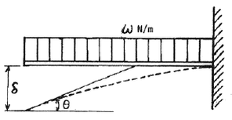
- 1m
- 2m
- 4m
- 7m
(정답률: 알수없음)

2. 변형율 성분이 εx=900×10-, εy=-100×10-6, γxy=600×10-6일 때 면내 최대 전단변형률의 값은?
- 400×10-6
- 583×10-6
- 983×10-6
- 1166×10-6
(정답률: 알수없음)
3. 길이가 30cm이고, 1mm×20mm인 직사각형 단면의 얇은 강철자의 양단에 우력을 작용시켜 중심각이 60°인 원호의 모양으로 굽혔다. 강철자가 받는 굽힘 모멘트는? (단, 탄성계수 E=210GPa이다.)
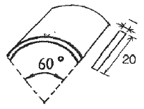
- 0.97Nㆍm
- 1.22Nㆍm
- 1.37Nㆍm
- 1.52Nㆍm
(정답률: 알수없음)
4. 직경 5cm의 차축이 7°만큼 비틀렸다. 이때 최대 전단응력이 100MPa이고, 재료의 전단 탄성계수가 80GPa이라고 하면 이 차축의 길이에 가장 가까운 것은?
- 2m
- 2.5m
- 1.5m
- 1m
(정답률: 알수없음)
5. 7.5kW의 모터가 3600rpm으로 운전될 때 전단응력이 60MPa를 초과하지 못한다면 사용할 수 있는 최소 축 지름은?
- 6mm
- 8mm
- 10mm
- 12mm
(정답률: 알수없음)
6. 같은 재료로 되어있는 지름 d의 원형 단면과 1변의 길이가 a인 정사각형 단면의 보가 있다. 이들 보가 굽힘에 대하여 같은 강도를 갖기 위한 d:a의 비는?
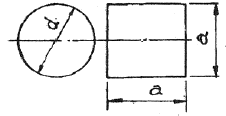
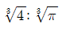
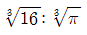
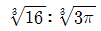
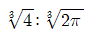
(정답률: 알수없음)
7. 길이 2m의 외팔보의 자유단에 5kN의 집중하중이 작용하고 있다. 허용응력이 100MPa이라면 높이 10cm의 사각형 단면에서 폭은?
- 6cm
- 7cm
- 8cm
- 9cm
(정답률: 알수없음)
8. 탄성계수 E=210 GPa, 선팽창계수 α=11.5×10-6/℃인 철도 레일을 15℃에서 양단을 고정하였다. 발생응력을 85MPa로 제한하려 할 때 열응력에 의한 온도변화의 허용범위는?
- -10.2 ~ 50.2°
- 20.2° ~ 30.5°
- -20.2° ~ 50.2°
- -20.2° ~ 30.5°
(정답률: 알수없음)
9. 그림과 같이 10cm×10cm의 단면적을 갖고 양단이 회전단으로된 부재가 중심축 방향에 압축력 P가 작용하고 있을 때 장주의 길이가 2m이라면 세장비의 값은 얼마인가?
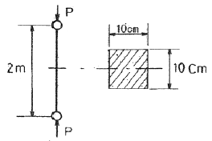
- 890
- 69
- 49
- 29
(정답률: 알수없음)
10. 다음 그림과 같이 연속보가 균일 분포하중(q)을 받고 있을 때 A점의 반력은?
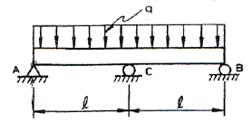
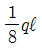
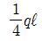
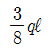
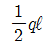
(정답률: 알수없음)
11. 수직응력에 의한 탄성에너지에 대한 설명 중 맞는 것은?
- 응력의 자승에 비례하고, 탄성계수에 반비례한다.
- 응력의 3승에 비례하고, 탄성계수에 비례한다.
- 응력에 비례하고, 탄성계수에도 비례한다.
- 응력에 반비례하고, 탄성계수에 비례한다.
(정답률: 알수없음)
12. 외팔보의 자유단에 하중 P가 작용할 때, 이 보의 굽힘에 의한 탄성 변형에너지를 구하면? (단, EI는 일정하다.)
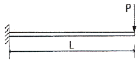
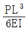
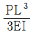
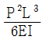
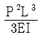
(정답률: 알수없음)
13. 그림과 같은 등분포 하중을 받고 있는 외팔보의 최대 처짐은? (단, EI는 보의 굽힘 강성이다.)
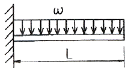
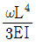
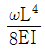
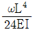
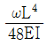
(정답률: 알수없음)
14. 길이 15m, 지름 10mm의 강봉에 8kN의 인장하중을 걸었더니 탄성변형이 생겼다. 이 때의 늘어난 길이는? (단, 이 강재의 탄성계수 E=210GPa이다.)
- 7.3mm
- 2.28mm
- 0.73mm
- 0.28mm
(정답률: 알수없음)
15. 다음 중 Hooke의 법칙과 관계 없는 것은? (단, σ: 수직응력, E: 탄성계수, ε: 수직변형률, j: 원래길이, δ: 변형량, τ: 전단응력, G: 전단탄성계수, γ:전단변형률, K: 체적탄성계수, εv: 체적변형률)
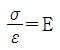
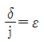
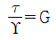
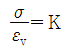
(정답률: 알수없음)
16. 다음 그림과 같은 삼각형 분포하중이 작용하고 있을 때, 이 단순보의 반력 RA는 몇 N인가?
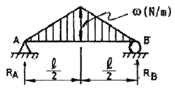
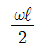
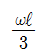
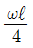
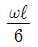
(정답률: 알수없음)
17. 코일스프링의 평균지름 D를 2배로 하면 같은 조건에서 처짐은 몇 배가 되는가?
- 2
- 4
- 6
- 8
(정답률: 알수없음)
18. 그림과 같이 지름이 다른 2단봉재에 저장되는 탄성에너지는? (단, E: 탄성계수)
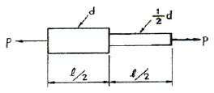
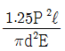
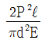
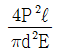
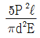
(정답률: 알수없음)
19. 고정단의 지름을 d, 비중량 γ, 길이 ℓ, 탄성계수 E인 원추형의 봉이 그림과 같이 연직으로 매달려있을 때 자중에 의한 신장량은 얼마인가?
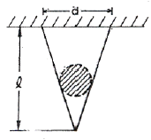
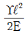
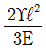
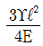
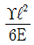
(정답률: 알수없음)
20. 도면과 같이 무게 W=6000N이 걸려 있을 때, 봉 AB에 걸리는 힘은 몇 N인가? (단, 마찰 및 자중은 무시한다.)
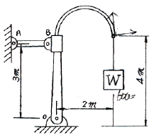
- 6000
- 4000
- 3000
- 8000
(정답률: 알수없음)
2과목: 기계열역학
21. 실린더에 밀폐된 8kg의 공기가 그림과 같이 P1=800kPa, 체적V1=0.27m3에서 P2=350kPa, 체적V2=0.8m3으로 직선적으로 변화하였다. 이 과정에서 공기가 한 일은?
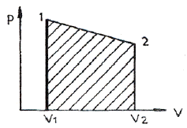
- 354.02kJ
- 304.75kJ
- 382.11kJ
- 380.94kJ
(정답률: 알수없음)
22. 다음 그림과 같이 관으로 300K, 1MPa의 고압헬륨이 흐르고 있고, 단열용기는 비어 있다. 밸브를 열어서 헬륨이 유입되는데, 용기의 압력이 1MPa에 이르면 밸브를 닫는다. 용기에 들어있는 헬륨의 최종온도는 얼마인가? (단, 헬륨의 정압비열과 정적비열은 각각 5.19kJ/kg-K, 3.11kJ/kg-K이다.)
- 300K
- 420K
- 500K
- 600K
(정답률: 알수없음)
23. 비열이 일정한 이상기체가 비가역 과정으로 온도와 부피가 같이 2배로 증가했다. 비엔트로피의 변화는? (단, Cp, Cv는 각각 정압비열 및 정적비열을 표시한다.)
- Cpln2
- Cvln2
- Cp-Cv
- 알 수 없음
(정답률: 알수없음)
24. 어떤 용기내(체적일정)외 유체는 기계적으로 교란되면서 19kJ의 일을 받아 들이면서 167kJ의 열을 흡수한다. 내부에너지의 변화는 약 몇 kJ인가?
- 148
- 186
- -148
- -186
(정답률: 알수없음)
25. 고열원과 저열원 사이에서 작동하는 카르노(Carnot)사이클 열기관이 있다. 이 열기관에서 60kJ의 일을 얻기 위하여 100kJ의 열을 공급하고 있다. 저열원의 온도가 15℃라고하면 고열원의 온도는?
- 128℃
- 720℃
- 288℃
- 447℃
(정답률: 알수없음)
26. 이상디젤사이클에 대한 설명으로 옳지 않은 것은?
- 두 개의 등엔트로피 과정이 포함되어 있다.
- 압축착화기관의 이상 사이클이다.
- 한 개의 등압과정과 한 개의 등온과정이 포함되어 있다.
- 압축비가 동일 할 때 이상오토사이클 보다 열효율이 낮다.
(정답률: 알수없음)
27. 다음 중 물질의 내부에너지가 아닌 것은?
- 분자운동에너지
- 위치에너지
- 화학에너지
- 핵에너지
(정답률: 알수없음)
28. 한 계가 300K의 대기로 2100kJ의 열량을 방출하면서 온도가 800K에서 500K로 떨어지고 엔트로피는 3kJ/K 만큼 증가 하였다. 이 2100kJ의 열량 중 유효에너지는?
- 2100kJ
- 1200kJ
- 900kJ
- 0 kJ
(정답률: 알수없음)
29. 이상적인 역 카르노 냉동사이클에서 응축온도가 330K, 증발온도가 270K이면 성능계수는 얼마인가?
- 2.7
- 3.3
- 4.5
- 5.4
(정답률: 알수없음)
30. 대기압이 752mmHg 일 때, 계기 압력이 5.23MPa인 증기의 절대 압력은 몇 MPa인가?
- 3.02
- 4.12
- 5.33
- 6.43
(정답률: 알수없음)
31. 압력 5kPa, 체적이 0.3m3인 기체가 일정한 압력 하에서 압축되어 0.2m3로 되었을 때 이 기체가 한 일은? (단, +는 외부로 기체가 일을 한 경우이고, -는 기체가 외부로부터 일을 받은 경우)
- 500J
- -500J
- 1000J
- -1kJ
(정답률: 알수없음)
32. 대기 1kg의 성분을 산소(R=0.2598kJ/kgK) 0.232kg, 질소(R=0.2969kJ/kgK) 0.768kg이라고 가정할 때 이 대기의 기체상수(kJ/kgK)는?
- 0.274
- 0.288
- 1.536
- 1.723
(정답률: 알수없음)
33. 실린더 내의 공기가 100kPa, 20℃상태에서 300kPa이 될 때까지 가역단열 과정으로 압축된다. 이 과정 중 공기의 엔트로피의 변화는? (단, 공기의 비열비 k=1.4이다.)
- -1.35kJ/kgK
- 0kJ/kgK
- 1.35kJ/kgK
- 13.5kJ/kgK
(정답률: 알수없음)
34. 다음의 열역학 상태량 중 종량적 상태량은?
- 압력
- 체적
- 온도
- 밀도
(정답률: 알수없음)
35. 냉동기의 성능계수를 높이는 것이 아닌 것은?
- 증발기의 온도를 높인다.
- 증발기의 온도를 낮춘다.
- 압축기의 효율을 높인다.
- 증발기와 응축기에서 마찰압력손실을 줄인다.
(정답률: 알수없음)
36. 일정한 토크 100Nm가 걸린 상태에서 회전하는 축이 있다. 이 축을 50 회전시키는데 필요한 일은 얼마인가?
- 5.0kW
- 5.0kJ
- 31.4kW
- 31.4kJ
(정답률: 알수없음)
37. 여름철 냉방으로 인한 전력 부하 상승은 발전 시스템에 큰 부담이 되고 있다. 이러한 관점에서 천연가스를 열원으로 사용하는 흡수식 냉동기에 관심이 집중되고 있다. 흡수식 냉동기에 대한 다음 설명 중 잘못된 것은?
- 일반적으로 암모니아를 냉매를 사용한다.
- 액체를 가압하므로 소요되는 일이 매우 적다.
- 증기 압축 냉동기에 비해 더 많은 장비가 필요하므로 장치가 복잡하다.
- 흡수기에서 열을 발생시키기 위하여 열원이 필요하다.
(정답률: 알수없음)
38. 밀폐 시스템의 가역 정압 변화에 관한 다음 사항 중 올바른 것은? (단, u:내부에너지, Q:전달열, h:멘탈피, v:비체적, W:일 이다.)
- d u = δ Q
- d h = δ Q
- d v = δ Q
- d W = δ Q
(정답률: 알수없음)
39. 어느 완전가스가 등온하에서 외부에 대하여 상태 1에서 상태 2까지 627.7kJ의 일을 하였다. 이 일을 열량으로 환산하면?
- 200kcal
- 300kcal
- 150kcal
- 2500kcal
(정답률: 알수없음)
40. 이상적 흡수냉동기의 작동을 위해 두 열원이 있다. 고열원이 100℃이고, 저열원이 50℃이라면 성능계수는?
- 1.00
- 2.00
- 4.25
- 6.46
(정답률: 알수없음)
3과목: 기계유체역학
41. 유동장 안에서 속도가 V(x,y,z,t)=10x2ytㆍi로 표현될 때 위치 x=1, y=1, z=1 시각 t=1에서의 x방향 가속도 성분 ax는? (단, V=Vxi+Vyj+Vzk, a=axi+ayj+azk)
- 10
- 110
- 200
- 210
(정답률: 알수없음)
42. 밀도 1.6kg/m3인 기체가 흐르는 관에 설치한 피토저압관(Pitot-static tube)의 두 단자 간의 압력차가 4mmH2O였다면 기체의 속도는 몇 m/s인가?
- 0.7
- 5.0
- 7.0
- 9.8
(정답률: 알수없음)
43. 파이프의 안지름이 70mm이고 이 속에 수소가스가 0.02kg/s의 질량유량으로 흐르고 있다. 수소의 평균속도는 몇 m/s인가? 이때, 수소의 압력은 100kPaㆍabs, 온도 15℃, R=287 J/kgㆍK이며 이상기체로 가정한다.
- 4.29
- 0.15
- 1.21
- 0.61
(정답률: 알수없음)
44. 표면으로 부터의 깊이가 2.5m인 곳에서 게이지 압력이 20kPa일 때, 이 액체의 비중은?
- 0.82
- 1
- 1.2
- 1.25
(정답률: 알수없음)
45. 지름 5cm, 길이 20m, 관마찰 계수 0.02인 원관속을 난류의 물이 흐른다. 관출구와 입구의 압력차가 20kPa이면 유량(L/s)은?
- 4.4
- 6.3
- 8.2
- 10.8
(정답률: 알수없음)
46. 다음과 같은 원통형으로 모델링할 수 있는 관제탑의 높이는 25m이고 지름은 5m이다. 풍속 36km/hr의 높이에 대해 등속인 바람이 불어올 때 이 관제탑에 작용되는 힘의 크기는 몇 kN인가? (단, 이 공기의 밀도는 1.23kg/m3이며 항력계수 CD는 0.35이다.)
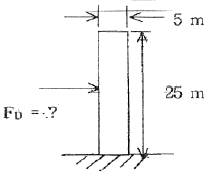
- 269
- 2.69
- 538
- 5.38
(정답률: 알수없음)
47. 중유(동점성계쑤 3.96×10-4m2/s, 비중 0.9)가 지름 0.2m인 수평 원관속을 층류로 흐르고 있다. 총 길이가 2km이고 입구측 압력은 100kPa이고 출구측 압력은 45kPa이었다. 이 때 유량은 몇 m3/s인가?
- 0.01
- 0.003
- 0.001
- 0.03
(정답률: 알수없음)
48. 그림과 같이 물 제트 펌프(jet pump)는 노즐 단면적(Aj)이 0.01m2이고 속도가 30m/s인 물제트에 의해 작동된다. 관의 단면적(Ap)이 0.075m2이고 하류에서 두 유체가 잘 섞인 후 6m/s의 속도로 펌프를 빠져나갈 때 펌프가 양수할 수 있는 체적유량은 몇 L/s 인가?
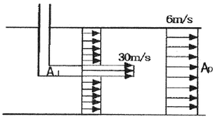
- 100
- 150
- 200
- 250
(정답률: 알수없음)
49. 그림과 같이 반경 2m, 폭 4m인 곡면에 작용하는 물에 의한 힘의 수평성분의 크기는?
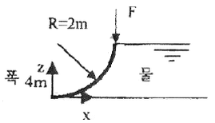
- 8N
- 8kN
- 78.4N
- 78.4kN
(정답률: 알수없음)
50. 일정한 유량의 물이 원관 속을 층류로 흐른다고 가정할 때 직경을 3배로 하면 손실수두는 몇 배로 되는가?
- 1/3
- 1/9
- 1/27
- 1/81
(정답률: 알수없음)
51. 세 변의 길이가 a, 2a, 3a인 작은 직육면체가 점도 μ인 유체 속에서 매우 느린 속도 V로 움직일 때, 항력 F는 F=F(a,μ,V)로 가정할 수 있다. 차원해석을 통하여 얻을 수 있는 F에 대한 표현식은?
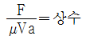
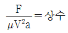
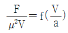
(정답률: 알수없음)
52. 다음 △P, L, ρ, Q를 결합했을 때 무차원항은? (단, △P: 압력차, ρ: 밀도, L: 길이, Q: 유량)
(정답률: 알수없음)
53. 다음 중 체력(body force)이 아닌 것은?
- 전기력
- 자기력
- 중력
- 표면장력
(정답률: 알수없음)
54. 2차언 속도장이 다음과 같이 주어졌을 때 유선의 방정식은 어느 것인가? (여기서는 C는 상수이다.)
- x2 y = C
- x y2 = C
- x y = C
- x/y = C
(정답률: 알수없음)
55. 등온상태에서 이상기체의 체적탄성계수를 바르게 표현한 것은? (단, P: 압력, ρ: 밀도)
- ρP
- P
- 1/P
- ρ/P
(정답률: 알수없음)
56. 유효낙차가 100m인 댐의 유량이 10m3/s일 때 효율 90%인 수력터빈의 출력은 몇 MW인가?
- 8.83
- 9.81
- 10.0
- 10.9
(정답률: 알수없음)
57. 수평으로 놓여진 원관 내의 유동이 층류이고, 완전 발달된 유동일 경우 압력은 유동의 진행 방향으로 어떻게 변화하는가?
- 선형으로 감소한다.
- 선형으로 증가한다.
- 포물선형으로 증가한다.
- 포물선형으로 감소한다.
(정답률: 알수없음)
58. 체적탄성계수 E=2.086GPa의 기름을 상온에서 1% 압축하는데 필요한 압력은 몇 Pa인가?
- 2.086×107
- 2.086×104
- 2.086×103
- 2.086×102
(정답률: 알수없음)
59. 폭이 2m, 길이가 3m인 평판이 물속에 수직으로 잠겨있다. 이 평판의 한쪽 면에 작용하는 수압은?
- 265N
- 176.4kN
- 264.6kN
- 352.8kN
(정답률: 알수없음)
60. 저항계수 CD=0.2, 운동방향의 투영면적 A=0.25m2인 물체가 속도 20m/s로 물속을 움직일 때 물체가 받는 힘은 몇 kN인가?
- 0.1
- 0.5
- 10
- 20
(정답률: 알수없음)
4과목: 유체기계 및 유압기기
61. 가솔린 연료에 첨가하는 아티노크제가 아닌 것은?
- 벤졸
- 질산에틸
- 에틸알콜
- 철 카보닐
(정답률: 알수없음)
62. 암(arm)의 길이가 716mm인 동력계가 2000rpm으로 운전할 때의 동력계의 하중이 7kgf로 측정되었다. 이 기관의 출력은?
- 5PS
- 7PS
- 10.3PS
- 14PS
(정답률: 알수없음)
63. 3,000kW의 디젤기관 발전소에서 기관을 전개(全開)운전하면 1일의 연료 소비량은 몇 kg인가? (단, 저위 발열량 10,000kcal/kgf, 효율은 40%이다.)
- 11,381
- 15,480
- 15,740
- 24,768
(정답률: 알수없음)
64. 디젤기관의 와류실식 연소실은 노즐 가ᄁᆞ이에서 큰 공기와 류를 얻을 수 있도록 설계된 것이다. 이 와류실식 연소실의 장점 중 가장 거리가 먼 것은?
- 주실의 연소 최고압은 6~8MPa로 높다.
- 실린더 헤드가 간단하며, 직접 분사식 보다 열효율이 높다.
- 고속운전이 가능하며 리터마력이 크다.
- 발연 한계 혼합비 λ=1.3 정도이므로 직접 분사식에 비해 공기 이용률이 높다.
(정답률: 알수없음)
65. 디젤기관에서 압력 상승율(dp/dθ)이 가장 큰 연소구간은 어느 것인가?
- 착화지연기간
- 급격 연소기간
- 제어 연소기간
- 후기 연소기간
(정답률: 알수없음)
66. 가스터빈기관 사이클의 가장 기본이 되는 열역학적 사이클은?
- Brayton 사이클
- Sabathe 사이클
- 2중연소 사이클
- Rankine 사이클
(정답률: 알수없음)
67. 다음 중 고속 디젤기관에 대한 설명으로 잘못된 것은?
- 넓은 회전 속도 영역에 걸쳐 회전 토크가 크다.
- 일산화탄소와 탄화수소 배출물이 적다.
- 부분 부하영역에서는 오토기관보다 연료소비율이 크다.
- 제동 열효율이 높고, 수명이 길다.
(정답률: 알수없음)
68. 내연기관의 출력을 증가시키기 위한 방법과 관련된 사항이다. 해당 되지 않는 것은?
- 회전수를 높인다.
- 평균유효압력을 높인다.
- 실린더직경을 크게한다.
- 플라이휠을 크게한다.
(정답률: 알수없음)
69. 디젤기관에서 분사노즐의 분사요건에 가장 관계가 없는 것은?
- 분포
- 발열량
- 관통력
- 무화
(정답률: 알수없음)
70. 어떤 4행정사이클 디젤기관의 폭발순서가 1-2-4-3이다. 4번 실린더가 압축행정시 2번 실린더는 어떤 행정을 하는가?
- 흡입행정
- 압축행정
- 폭발행정
- 배기행정
(정답률: 알수없음)
71. 모듈이 10, 잇수가 30개, 이의 폭이 50mm일 때, 회전수가 600rpm, 체적 효율은 80%인 기어펌프의 송출 유량은 약 몇 m3/min인가?
- 0.46
- 0.27
- 0.66
- 0.77
(정답률: 알수없음)
72. 작동유 속에 불순물을 제거하기 위하여 사용하는 부품은?
- 패킹
- 스트레이너
- 축압기
- 유체 커플링
(정답률: 알수없음)
73. 다음 중 밸브 몸체가 밸브 시트 시트면에 직각방향으로 이동하는 형식의 밸브로 정의되는 것은?
- 포핏 밸브
- 스폴 밸브
- 파이럿 밸브
- 슬라이드 밸브
(정답률: 알수없음)
74. 보기 기호는 어떤 것을 표시한 유압기호인가?
- 증압기
- 고정 조리개
- 아큐뮬레이터
- 보조 가스용기
(정답률: 알수없음)
75. 유압기계를 처음 운전할 때 또는 장치내의 슬러지를 용해하기 위한 작업은?
- 필터링
- 플래싱
- 플래이트
- 엘레멘트
(정답률: 알수없음)
76. 일반적으로 유압 실린더의 작동속도를 바꾸자면 유압유의 무엇을 변환하여야 하는가?
- 유량
- 점도
- 압력
- 방향
(정답률: 알수없음)
77. 유체 컨버터의 특징 설명으로 틀린 것은?
- 무단 변속을 할 수 있다.
- 원동기와 종동기 모두 수명이 연장된다.
- 부하를 건 채로 원동기를 시동할 수 없다.
- 과부하 때문에 기관이 정지하거나 손상되는 일이 없다.
(정답률: 알수없음)
78. 주로 시스템의 작동이 정부하일 때, 사용되며 피스톤의 속도 제어를 실린더에 공급 되는 입구측 유량을 조절하여 제어하는 회로는?
- 카운터밸런스 회로
- 블리드오프 회로
- 미터 인 회로
- 미터 아웃 회로
(정답률: 알수없음)
79. 밸브의 전환 도중에서 과도적으로 생긴 밸브 포트간의 흐름을 의미하는 유압 용어는?
- 자유 흐름(free flow)
- 인터플로(inter flow)
- 제어 흐름(controlled flow)
- 아음속 흐름(subsonic flow)
(정답률: 알수없음)
80. 유압회로에서 캐비테이션이 발생하지 않도록 하기 위한 방지대책으로 가장 적합한 것은?
- 흡입관에 급속 차단장치를 설치한다.
- 흡입 유체의 유온을 높게 하여 흡입한다.
- 과부하시는 패킹부에서 공기가 흡입되도록 한다.
- 흡입관 내의 평균유속이 3.5m/s 이하가 되도록 한다.
(정답률: 알수없음)
5과목: 건설기계일반 및 플랜트배관
81. 영구주형(비소비성주형)과 비영구주형(소비성주형)을 다같이 사용하는 주조법은?
- 원심주조법
- 셸모울딩법
- 인베스트먼트법
- 다이캐스팅법
(정답률: 알수없음)
82. 내경 측정에만 이용되는 측정기는?
- 실린더 게이지
- 버니어 캘리퍼스
- 측장기
- 블록 게이지
(정답률: 알수없음)
83. 단조완료 온도는 어느 정도로 하는가?
- 재결정온도 보다 약간 높게 한다.
- A1변태점보다 약간 높게 한다.
- A3변태점보다 약간 높게 한다.
- 청열취성 온도보다 약간 높게 한다.
(정답률: 알수없음)
84. 연삭숫돌 표시법 WA46H8V에서 H가 갖는 의미는?
- 연삭숫돌 재료
- 입도
- 점결제
- 결합도
(정답률: 알수없음)
85. 강철표면에 규소를 확산 침투시키는 방법으로 산류(酸類)에 대한 내부식성, 내마멸성이 큰 표면 경화법은?
- 질화법
- 청화법
- 크로마이징(chromizing)
- 실리코나이징(siliconizing)
(정답률: 알수없음)
86. 다음의 용접법 중에서 전기저항 용접이 아닌 것은?
- 스폿(SPOT) 용접
- 프로젝션 용접
- 티그(TIG) 용접
- 플래시 용접
(정답률: 알수없음)
87. 숫돌을 사용하여 가공하는 방법은?
- 버니싱(burnishing)
- 슈퍼 피니싱(superfinishing)
- 방전가공(放電加工)
- 초음파 가공(超音波加工)
(정답률: 알수없음)
88. 박스지그(box jig)는 어느 기계가공에서 사용되는가?
- 밀링머신에서 헬리컬기어를 가공할 때
- 선반에서 테이퍼를 가공할 때
- 드릴링에서 다량 생산을 할 때
- 내면 연삭가공을 할 때
(정답률: 알수없음)
89. NC 공작기계에서 백래쉬(back-lash)의 오차를 줄이기 위해 사용하는 NC 기구는?
- 리드 스크루(lead screw)
- 볼 스크루(ball screw)
- 세트 스크루(set screw)
- 유니파이 스크루(unified screw)
(정답률: 알수없음)
90. 두께 2mm, C=0.2%의 경질 탄소강판(硬質 炭素鋼坂)에 지름 25mm의 구멍을 펀치로 뚫을 때, 전단하중 P=3140kgf라면 전단응력은 얼마인가?
- 약 20kgf/mm2
- 약 25kgf/mm2
- 약 30kgf/mm2
- 약 40kgf/mm2
(정답률: 알수없음)
91. 중량물을 달아 올려서, 운반하는 기계의 명칭은?
- 컨베이어 벨트(Conveyor belt)
- 풀 트레일러(Full trailer)
- 트랙터(Tractor)
- 호이스팅 머신(Hoisting machine)
(정답률: 알수없음)
92. 주로 유압백호 굴삭기에 부착하여 사용되는 착암기는?
- 재크해머(Jack hammer)
- 드리프터(Drifter)
- 스토퍼(Stopper)
- 브레이커(Braker)
(정답률: 알수없음)
93. 쇄석기에 사용되는 스크린의 표시방법 중 메쉬(mesh)란?
- 10cm2당 구멍수
- 1cm당 구멍수
- 1ft2당 구멍수
- 1 in당 구멍수
(정답률: 알수없음)
94. 작업장치는 크레인 붐에 설치되며 말뚝 박기 작업에 이용되고, 붐 리더, 스트랩, 해머, 로프 등으로 구성되는 건설 기계는?
- 백 호우(back hoe)
- 클램셸(clamshell)
- 파일 드라이버(pile driver)
- 드랙 라인(drag line)
(정답률: 알수없음)
95. 불도우저의 규격표시 방법에서 옳은 것은?
- 등판능력
- 견인력
- 출력
- 중량
(정답률: 알수없음)
96. 유압기기중 압력이 가장 높은 유압 펌프는?
- 베인펌프
- 플런저펌프
- 기어펌프
- 체인펌프
(정답률: 알수없음)
97. 크롤러 식 트랙터(crawler type tractor)의 접지 압에 관한 설명으로 옳은 것은?
- 접지 압은 불도우저의 중량이 커질수록 높아지나 불도우저의 접지면적은 관계없다.
- 접지 압은 중량과는 관계없이 접지면적만 넓히면 높아진다.
- 접지 압은 중량과 면적을 고려하지 않는다.
- 불도우저의 전 장비 중량이 일정할 때, 그 접지 면적을 넓히면 접지 압은 낮아진다.
(정답률: 알수없음)
98. 모터 그레이더의 규격 표시 방법으로 가장 적합한 것은?
- 스케리파이어(Scarifier)의 발톱(teeth)수로 나타낸다.
- 엔진 정격회전수(rpm)로 나타낸다.
- 표준 베토판의 길이(m)로 나타낸다.
- 전륜간 거리(m)로 나타낸다.
(정답률: 알수없음)
99. 덤프 트럭(dump truck)에서 주행 동력 전달장치의 순서로 옳은 것은?
- 엔진-클러치-변속기-차동장치-추진축-종감속기-차축-구동륜
- 엔진-변속기-클러치-추진축-차동장치-종감속기-차축-구동륜
- 엔진-변속기-클러치-차동장치-추진축-차축-종감속기-구동륜
- 엔진-클러치-변속기-추진축-차동장치-차축-종감속기-구동륜
(정답률: 알수없음)
100. 강판제의 중공(中空) 드럼의 외주에 여러개의 돌기가 있으며, 주로 피견인식이 많이 사용되는 롤러(Roller)는?
- 탬핑 롤러
- 머캐덤 롤러
- 타이어 롤러
- 진동 롤러
(정답률: 알수없음)
δ = (5qL^4)/(384EI)
여기서 q는 균일분포하중, L은 보의 길이, E는 탄성계수, I는 단면의 모멘트 of inertia이다.
따라서, L을 구하기 위해 위 식을 다시 정리하면 다음과 같다.
L = ((384EIδ)/5q)^(1/4)
주어진 값들을 대입하면,
L = ((384 * 210 * 10^9 * 0.03)/(5 * 9.81 * sin(0.02)))^(1/4) ≈ 2m
따라서, 이 보의 길이는 2m이다.